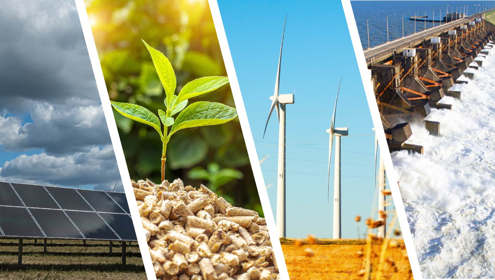
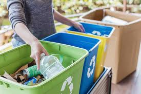
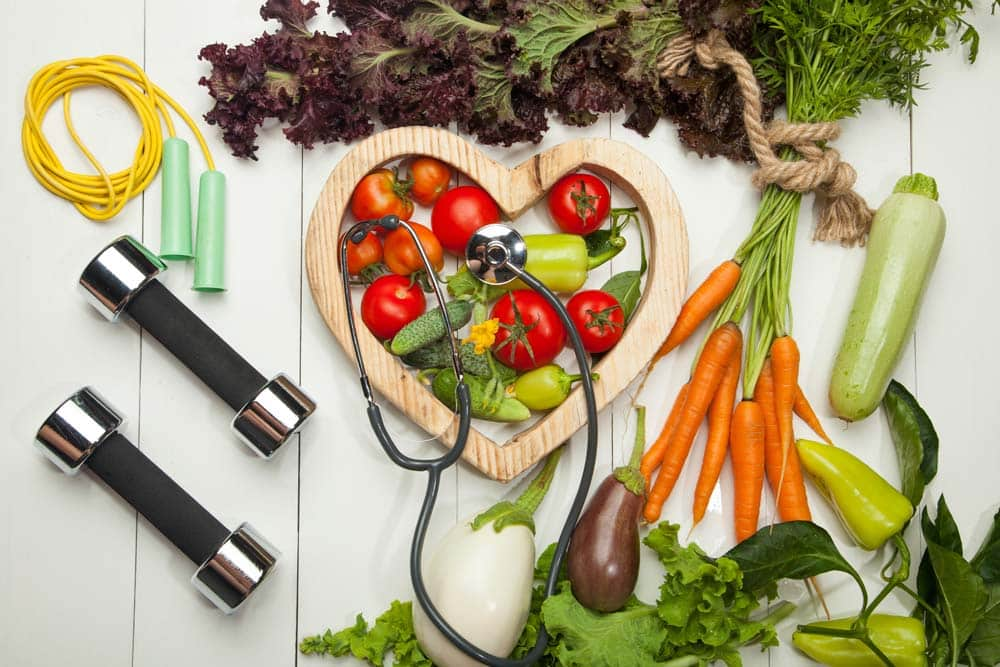
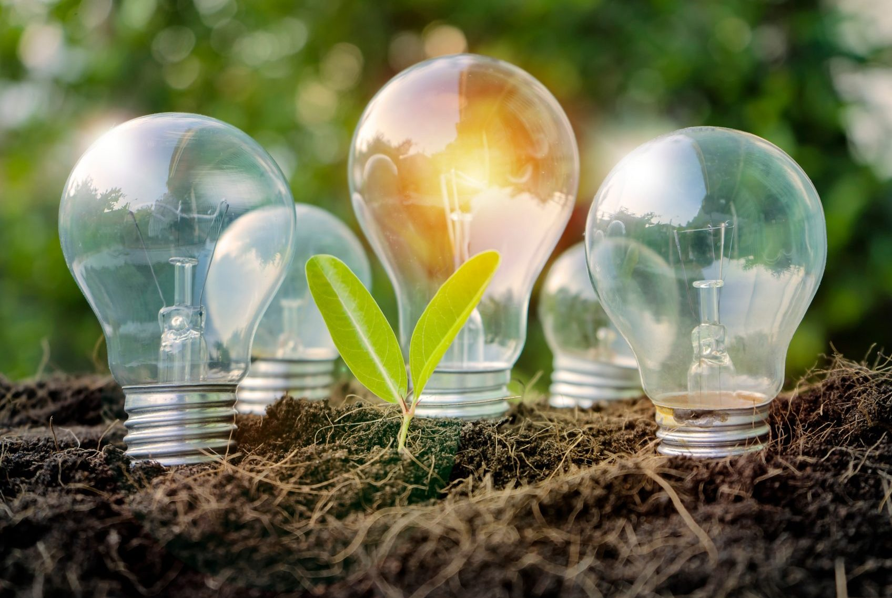

Vida Sostenible
Tu guía diaria para un impacto positivo en el planeta.

El futuro de la energía limpia: ¿Estamos listos?
la transición hacia fuentes de energía sostenibles ya no es una visión lejana, sino una realidad palpable que está redefiniendo cómo interactuamos con la energía dentro de nuestras cuatro paredes. La integración de tecnologías como la eólica y la biomasa representadas en la imagen marca el inicio de una era donde el hogar se convierte en u.....

Guía básica de reciclaje
En 1977 se adoptó la Declaración de Tbilisi sobre educación ambiental para crear nuevas pautas de comportamiento de los individuos, los grupos y la sociedad en su conjunto con respecto al medioambiente. Siguiendo el espíritu de esta declaración que ya tiene casi 45 años, la Universidad Franco-Haitiana de Cabo Haitiano, institución uruntau....

Hábitos verdes para el 2026
La Facultad de Ciencias Económicas (FCE) de la Universidad de Buenos Aires está centrada en la investigación, la transferencia de conocimiento, el asesoramiento técnico y las actividades de extensión universitaria. Se trata de una de las universidades más importantes de Argentina, y participa en programas internacionales relacionados r.......

Mejores Alternativas limpias
El mundo aún está lejos de alcanzar la visión del Objetivo de Desarrollo Sostenible número 7 cuya meta es energía limpia y asequible para todos, declaró el Secretario General de la ONU durante un evento de alto nivel en el Consejo Económico y Social de la ONU. El Simposio sobre Interconexión Global Energética reunió a representantes ......